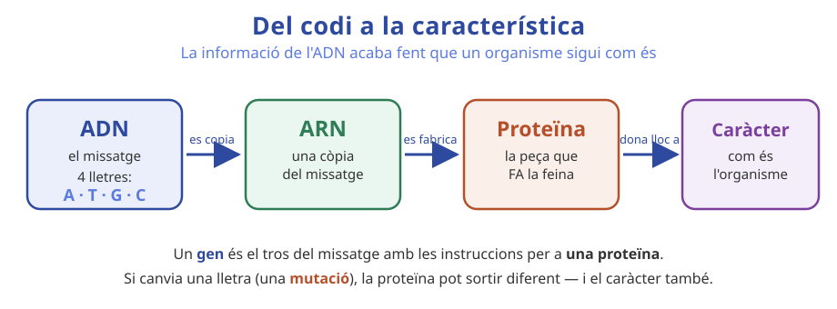

Has sentit les paraules «ADN» i «gen». Què creus que són i on són, dins del teu cos?
Un canvi molt petit dins d'una cèl·lula pot canviar com és una persona sencera? Per què sí o per què no?
El novembre de 2018, el científic He Jiankui va anunciar a la Xina el naixement de dues bessones, la Lulu i la Nana. Abans que naixessin, havia fet servir la tècnica CRISPR per modificar un gen (anomenat CCR5) dels embrions, amb la intenció de fer-les resistents al virus del VIH. No els va donar cap medicament: va reescriure una part del seu ADN. La comunitat científica internacional ho va condemnar durament: la tècnica no estava prou provada, no se sabien els efectes a llarg termini i s'havia fet sense un control ètic adequat. He Jiankui va acabar condemnat a la presó.
LITERAL. Què va fer exactament He Jiankui, i per a què?
INFERENCIAL. Per què creus que la comunitat científica ho va condemnar, si la intenció (evitar el VIH) semblava bona?
AVALUATIVA. Si una tècnica funciona en unes cèl·lules, vol dir que ja és segura per fer-la servir en un bebè? Argumenta-ho.
ÈTICA. Hauríem de permetre que uns pares demanin modificar gens dels seus fills? En quins casos sí, en quins no?
Postura del nostre equip (permetre / prohibir / permetre amb condicions) i dos motius:

Fixa't en la Fig.1 i completa el camí de la informació genètica escrivint què fa cada fletxa (per exemple: «es copia», «es fabrica»…):
ADN → ARN → proteïna → característica
Què és un gen? Explica-ho i posa-hi una comparació teva (recepta, codi, pla…):
Recorda: CRISPR són unes «tisores» moleculars que permeten tallar i editar un tros concret de l'ADN a voluntat.
Què és una mutació i com pot canviar una característica d'un ésser viu?
Què fa CRISPR en el cas dels bebès editats?
Argument científic — es pot fer amb prou seguretat? Per què?
Argument ètic — s'hauria de fer? En quines condicions?
1. Explica el camí de l'ADN fins a una característica, fent servir ADN, gen i proteïna.
2. Un company diu: «Si es pot editar l'ADN d'un embrió, ja n'hi ha prou raó per fer-ho sempre». Quin problema té aquest argument? (marca)
☐ No cita cap font fiable, i per tant no es pot verificar el que afirma
☐ Confon «es pot fer» (ciència) amb «s'hauria de fer» (ètica)
☐ És un argument d'autoritat: només valdria si ho digués un científic reconegut
3. T'arriba pel mòbil una notícia que diu que ja es poden «triar per catàleg» tots els gens d'un bebè. Abans de reenviar-la, quines dues preguntes et faries?